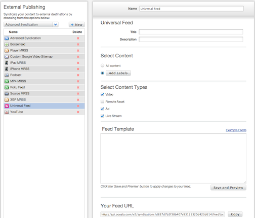

Ooyala supports many specific kinds of syndications, as detailed in Specific Syndications. If
you cannot find a specific syndication type to meet your needs, you can always create a
Universal syndication.
Universal syndications rely on the Universal Syndication Template
Language (USTL). You need to create a template in this language to include when you create the
syndication in the
Backlot UI. Details about USTL are provided in
the apendixes to the
Backlot API Reference.
To create a universal syndication:

-
Log in to the Backlot UI.
The Backlot UI opens.
-
Open the PUBLISH page.
-
Click the External Publishing subtab.
-
From the list box on the left, select publishing type Universal and click
New.
A new syndication is created.
-
If desired, change the name of the syndication.
-
If desired, change the description of the syndication.
-
To specify which content is syndicated, if this
syndication is for all your content, click All content.
Otherwise, click Add Labels and select one or more labels.
-
To indicate specific types of content to syndicate, click the checkbox next to the
desired types:
- Videos
- Remote Assets
- Ads (video)
- Live Stream
-
In the Feed Template box, paste your
USTL template. You can look at examples by clicking Example Feeds.
-
To save and view your feed/template, click Save and Preview.
Changes take effect immediately, and the syndication is created. The feed can be accessed at the URL shown in Your Feed URL.